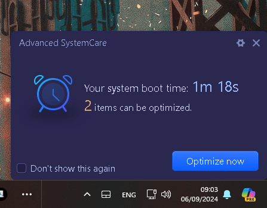

Resetup of the Studio

Resetting Up a Studio at Home: Creating a Balanced Work-Life Space in a Bungalow
Balancing work, family, and personal space has become more crucial than ever. Whether you're working from home or running a creative studio, finding the right setup is key to maintaining productivity while enjoying family life. Here’s how you can merge your home into a functional workspace, while keeping harmony and mindfulness at the forefront.
Step 1: Reset Up Your Studio in the Living Room
If you’re looking to merge your studio space with your home, the living room can be an ideal place. Here’s why:
-
Central Hub: The living room is often the heart of the home. It can be repurposed as a flexible space where creativity flows, making it perfect for a studio setup.
-
Natural Light: Most living rooms offer ample natural light, boosting productivity and creativity.
-
Dual Purpose: Invest in modular or foldable furniture to switch between a family living area and a studio without cluttering the space.
Consider a minimalistic approach by using sleek, multi-purpose desks and shelves. This way, you’ll have all your creative tools within reach without compromising the aesthetics of the home.
Step 2: Move Family Life to the Garden
If your home studio is taking over the living room, it’s essential to provide a dedicated space for family life. The garden can be transformed into a cozy outdoor living space, offering:
-
Fresh Air and Relaxation: Outdoor areas are great for family bonding, picnics, or even a place to unwind.
-
Storage Space: Utilize sheds or outdoor storage units to keep toys, tools, or other household items. This will free up more space in the bungalow.
-
Play Zone for Kids: If you have children, design a play area in the garden with safe equipment where they can enjoy themselves while you focus on work indoors.
By keeping family life outdoors, you ensure your living room remains a productive, clutter-free studio.
Step 3: Mindful Meditations to Avoid Overwhelm
Working from home, especially with the family nearby, can sometimes trigger the limbic brain, which controls emotional responses like stress and anxiety. Mindful meditation practices can help you stay centered:
-
Morning Routine: Start your day with 10 minutes of meditation before diving into work. This sets a calm tone for the day.
-
Break Meditation: Take short, 5-minute breaks to breathe deeply or stretch during the workday. It helps in resetting your focus.
-
Evening Reflection: After a busy day, meditate for a few minutes to let go of any remaining tension and switch back to family life.
Mindfulness ensures that you’re not overwhelmed by the demands of work and family, creating a smooth transition between the two.
Step 4: Use the Garden for Storage
When converting the living room into a studio, decluttering becomes vital. The garden space can serve as an excellent solution:
-
Garden Shed: Invest in a durable, weatherproof shed to store your studio supplies, seasonal items, or anything that clutters the home.
-
Creative Outdoor Storage: Consider building outdoor storage benches or cabinets. These can double as seating areas while keeping things out of sight.
-
Organize Efficiently: Label and categorize items for easy access. You’ll keep the indoor space functional and aesthetically pleasing.
Step 5: Finding the Right Bungalow in Wokingham
The right home makes all the difference when balancing family and work. Wokingham is an ideal location for setting up a home studio due to its quiet suburban vibe and proximity to nature. Look for a bungalow with the following features:
-
Spacious Garden: A large garden ensures you have enough space for family activities, meditation, and storage.
-
Proximity to Work: Ideally, choose a property within biking distance to work, reducing stress from long commutes while keeping you active.
-
Flexible Interiors: Look for bungalows with open floor plans that can be easily transformed to meet your work and family needs.
Step 6: Insuring Your Home and Studio in the UK
Finally, don’t overlook the importance of insuring your home and studio. Protect your property and assets by getting the right insurance coverage:
-
Home Insurance: Covers your living space and possessions. If you’re moving your studio into the living room, make sure your home insurance covers any equipment or valuables you’ll have there.
-
Studio or Home Office Insurance: If you’re running a business from home, you might need specialized insurance for business equipment, legal cover, or public liability.
-
Garden Insurance: If you’re using the garden for storage, check if your policy includes coverage for sheds or outdoor items.
It’s worth contacting an insurance provider that understands the unique needs of home offices and creative studios in the UK, especially in areas like Wokingham.
Conclusion
By resetting your studio in the living room and embracing outdoor family life, you create a balanced, harmonious environment. With a bungalow that’s close to work and mindful practices to keep your stress in check, you can merge work and home life smoothly, while ensuring everything is insured and protected.
Now that you've crafted your studio in a beautiful home setting, enjoy the newfound freedom and productivity that come with working in a space designed just for you!
If this sounds like a setup you’d like to achieve, what do you think the first step would be for your home?
Imported from rifaterdemsahin.com · 2024